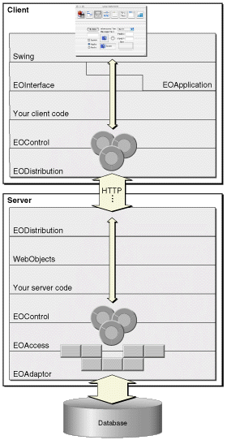

A Java Client application is essentially an Enterprise Objects application distributed across an application server and one or more client applications or applets.
The design of Java Client breaks up some of the layers of the Enterprise Object technology and distributes them across the client and the application server. Figure 2-1 illustrates this architecture.
Figure 2-1 Java Client architecture
The packages com.webobjects.foundation, com.webobjects.eocontrol,
and com.webobjects.eodistribution.client are
provided on the client to allow real, full-fledged, first-class
enterprise objects to exist on the client side. Other technologies similar
to Java Client usually implement client stubs on the client side,
instead of creating real objects.
The client stub design requires a round trip to the server anytime the user does anything with the business logic on the client. In the Java Client architecture, the business logic (represented in real objects) can be queried and otherwise manipulated without making a round trip to the server. Only when the user explicitly executes a database action, such as saving or fetching, is a round trip to the server made. This is made possible because the distribution layer uses a by-copy distribution mechanism, which is described in more detail in "Java Client and Other Multi-Tier Systems".